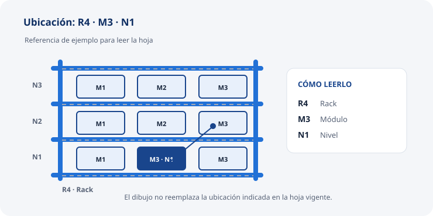

PUESTO DE COORDINACIÓN DEL DEPÓSITO
Encargada de depósito
Organizás el trabajo desde la autorización hasta la salida. Preparás la información del picking, resolvés consultas de stock, registrás las operaciones que te corresponden y coordinás con Control y Ventas.
Abrí «Todo el detalle» para ver cada video y su síntesis. Usá «Abrir video en grande» para leer las pantallas; en el celular, giralo horizontal. Los datos privados están tapados y los clips no tienen audio. Practicá cada tarea con el tutor: la grabación no reemplaza los controles escritos ni la habilitación.
ANTES DE ENTREGAR UN PEDIDO
Abrir el día y confirmar aprobaciones
Proceso normal y simple
Actualizá el registro diario desde PalJet, revisá los avisos y confirmá la aprobación y forma de envío. Solo después pasá los pedidos aprobados a la búsqueda e impresión.
Detalle a fondo · Preparación y controles
Qué necesitás
PalJet, la planilla vigente de autorización de salida y el canal donde se comunican las aprobaciones.
Paso a paso
- Iniciá sesión en PalJet y abrí la planilla de autorización de salida.
- En PalJet, filtrá los comprobantes de clientes por nota de pedido.
- Volcá los pedidos que deban quedar en el registro diario, uno por fila, manteniendo el formato de la planilla.
- Revisá los pedidos que informaron para preparar y localizá su aprobación.
- Confirmá que la aprobación venga de Administración, Gerencia o Dirección. El aviso de un vendedor sirve como aviso, pero no reemplaza la aprobación.
- Confirmá en el registro la forma de envío: transporte, retiro o en mano.
- Si falta la aprobación o la forma de envío, consultá al aprobador antes de liberar la preparación.
- Ordená los pedidos según las prioridades comunicadas. Si no hay prioridad especial, conservá el orden de llegada.
Comprobación
La nota que pasa a preparación tiene una aprobación identificable, cliente y envío definidos. Una nota emitida solo la elimina Gerencia, y únicamente si no hay ningún artículo solicitado disponible.
Si algo difiere
No entregues la nota al equipo como autorizada. Consultá al aprobador y conservá la secuencia hasta recibir una respuesta.
↑ Volver al resumenPEDIDO APROBADO
Buscar e imprimir la nota de pedido
Proceso normal y simple
Buscá en PalJet la nota por cliente y fecha, contrastá sus datos con la aprobación y verificá que no esté preparada. Hacé una copia para el picking e imprimila una sola vez.
Detalle a fondo · Búsqueda y salida impresa
Qué necesitás
Aprobación confirmada y datos del pedido para identificarlo: número, cliente y fecha. Usá el acceso de PalJet que te asignaron.
Paso a paso
- Abrí la consulta de comprobantes de clientes en PalJet.
- Filtrá por período y tipo Nota de Pedido.
- Localizá la nota autorizada. Para preparar, la guía vigente usa el estado «Emitido».
- Compará número, cliente y fecha con la aprobación. No tomes un resultado solo porque coincide el nombre.
- Verificá que la nota no esté ya preparada.
- Hacé una copia del pedido para el picking e imprimí una vez.
- Comprobá que salió una hoja legible del pedido correcto.
Si algo difiere
Si el estado, cliente, fecha o número no coincide, o sospechás que la nota ya se imprimió, detené la impresión y verificá el comprobante con el tutor antes de continuar.
Video de apoyo
Búsqueda e impresión de notas de pedido
Qué muestra: Filtrá por fechas y tipo Nota de pedido; identificá la fila por número, cliente y fecha; abrí Imprimir comprobante y revisá impresora y copias.
Qué completar: La grabación enseña la búsqueda y la impresión. La aprobación y el estado del pedido se comprueban con el circuito vigente antes de entregarlo.
Otra grabación de búsqueda e impresión
El segundo video histórico muestra la misma búsqueda por fecha y tipo de comprobante. Después de elegir la nota correcta, abre Imprimir comprobante con el clic derecho sobre la fila. Revisá número, cliente, impresora y copias antes de confirmar.
Síntesis de una grabación anterior; el clip no forma parte de esta edición pública.
PREPARAR EL TRABAJO DEL PISO
Armar la hoja de picking
Proceso normal y simple
Buscá los códigos de la nota en el Excel de picking por sectores. Añadí las ubicaciones, envío y prioridad; imprimí y entregá la hoja al equipo.

Ejemplo de lectura de una ubicación: R4 · M3 · N1.Detalle a fondo · De la nota a la hoja legible
Qué necesitás
Nota impresa y autorizada, archivo vigente de picking por sectores, forma de envío y prioridad del día.
Paso a paso
- Copiá los códigos de la nota desde PalJet.
- Buscá cada código en el Excel vigente de picking por sectores.
- Copiá a la hoja la ubicación en formato rack, módulo y nivel (por ejemplo, R4-M3-N1).
- Si un código no aparece o muestra más de una posición posible, verificá la ubicación con la información de stock antes de enviarlo. No inventes posiciones.
- Anotá en la hoja la forma de envío que figura en la autorización.
- Asigná el número de prioridad indicado. Sin prioridad especial, se mantiene el orden de llegada.
- Revisá visualmente si el volumen de los pedidos del día parece entrar en la camioneta y consultá a la coordinación si necesitás reorganizar las salidas.
- Revisá que código, descripción, ubicación, forma de envío y prioridad sean legibles; dejá una sola hoja en la mesa de picking.
Comprobación
La hoja identifica un solo pedido y le permite al picker reconocer qué buscar y dónde. Los artículos con posiciones especiales se indican con la ubicación conocida en la planilla vigente.
Si cambia el orden
Indicá qué pedido tiene prioridad y qué trabajo queda interrumpido. Asegurate de que el equipo mantenga juntas la hoja y la mercadería de cada pedido.
↑ Volver al resumenCONSULTAS DURANTE EL PICKING
Verificar un artículo faltante y pedir reposición
Proceso normal y simple
Cuando una línea vuelve marcada en cero, confirmá el código y la existencia en PalJet. Si no aparece, revisá las fuentes de ubicación y registrá el faltante. Avisá a Ventas solo si el vendedor lo pidió de antemano; no demores la salida esperando una respuesta. Si está en el depósito externo, identificá el pallet para solicitarlo.
Detalle a fondo · Verificación, registro y traslado solicitado
Qué necesitás
Hoja de picking con la línea marcada, código, cantidad y ubicación buscada; PalJet; hoja de ubicaciones; planilla vigente de pallets y remitos del depósito externo; canal de movimientos del equipo.
Paso a paso
- Leé la línea marcada en cero y confirmá el código, cantidad y posición de la hoja.
- Consultá PalJet → Existencia de artículo para ese código y depósito.
- Si el sistema muestra existencia, pedí que se revise la ubicación indicada y posiciones contiguas. Si aún no aparece, profundizá la búsqueda con las fuentes operativas: aviso de movimientos, Excel de picking, planilla de pallets externos y remitos de proveedor.
- Si encontrás otra posición, comunicála al picker y pedí que confirme físicamente el artículo.
- Si no encontrás el producto, registrá el código en el cuadernillo de faltantes. Avisá al vendedor solo si lo pidió de antemano. No detengas la salida para consultar si el pedido sale o para esperar su respuesta. Si el cliente necesita con urgencia un artículo o ese artículo es el motivo principal del pedido, el vendedor debe avisarlo con anticipación.
- Si el vendedor ya comunicó un reemplazo acordado con el cliente, anotá en el dorso de la hoja el código sustituto antes de enviarla a preparación. No sustituyas artículos por cuenta propia.
- Si el artículo está en el depósito externo, localizá en la planilla el pallet y remito; solicitá el movimiento por el correo operativo del puesto y hacé seguimiento.
- Cuando llegue la mercadería, compará lo recibido con la solicitud y actualizá la planilla correspondiente.
Comprobación
El faltante tiene código confirmado y registro; el aviso al vendedor se hace solo si lo pidió de antemano. Cuando corresponde, el pallet está identificado y la reposición solicitada. No se promete un envío automático del saldo.
Si algo difiere
Si el código, posición o cantidad no coincide entre hoja, sistema y físico, mantené el pedido identificado y consultá antes de cambiar la hoja o sustituir un producto.
Dos consultas de ventas explicadas en grabaciones anteriores
Sirven para analizar el movimiento de un artículo. No determinan por sí solas si hay físico disponible ni autorizan un ajuste o reemplazo.
Período de venta de un artículo
Buscá el código en Existencias de artículos, definí el mismo rango de fechas y depósito, distinguí ventas de otros movimientos y sumá las cantidades de venta. Si el producto usa varios códigos o depósitos, repetí la consulta y consolidá los resultados.
Consulta 174 de ventas por período
En Consultas y herramientas, abrí «Cantidad de artículos vendidos en un período», elegí fechas y sucursal, filtrá los códigos del producto y leé el total vendido. No confundas ese total con el stock actual ni con traslados internos.
Síntesis de dos grabaciones históricas; sus clips no forman parte de esta edición pública.
DESPUÉS DEL CONTROL DEL PEDIDO
Cargar lo preparado, emitir y comprobar el remito
Proceso normal y simple
Tomá las cantidades reales después del control. Cargá el pedido en BBJet, finalizá y usá el código de preparación en PalJet. Revisá y emití el comprobante con la cuenta indicada; verificá el resultado de stock antes de seguir.
Detalle a fondo · Cantidades, comprobante y diferencia de stock
Qué necesitás
Pedido controlado, hoja, cantidades físicas preparadas, reemplazos acordados con Ventas y acceso asignado a BBJet y PalJet. La cuenta de emisión la indica Gerencia para el cliente.
Paso a paso
- En BBJet, elegí el depósito correcto y abrí Gestión de Inventario.
- Buscá el pedido que coincide con la hoja; compará número, cliente y fecha antes de continuar.
- En Preparar, cargá las cantidades realmente preparadas. Usá Completar todos solo si todos los artículos están preparados en su totalidad; si hay una diferencia, editá esa línea con la cantidad física real.
- Revisá código y descripción de cada línea contra la hoja, incluidos los reemplazos que Ventas acordó con el cliente y que anotaste al dorso.
- Finalizá la preparación y conservá el código de la Orden de Preparación de Carga que muestra BBJet.
- En PalJet, abrí Preparado de Pedido e ingresá ese código en Comprobante/artículo. Revisá cliente, códigos y cantidades antes de confirmar.
- En Remitos, usá la cuenta 1 salvo que Gerencia indique otra para el cliente. Comprobá pedido, transporte, valor declarado indicado y bultos antes de emitir.
- Verificá que exista el comprobante generado y que el stock refleje el movimiento una sola vez.
Si PalJet muestra una diferencia
Detené el remitaje. Contá físicamente por código y depósito. Un ajuste solo se hace con autorización previa de Dirección o Gerencia General: registrá la diferencia autorizada, el motivo y el comprobante y verificá el saldo resultante. Si no hay autorización, no ajustes.
Ante una pantalla dudosa o una respuesta interrumpida, buscá el comprobante antes de volver a emitir. El movimiento de stock es automático: no repitas otro movimiento para forzar el resultado.
Video de apoyo
Picking digital, primera parte: pasar el pedido físico a digital por el B2B
Qué muestra: Elegí el depósito en BBJet; buscá el pedido comparando cliente, comprobante y fecha; revisá los renglones y cargá las cantidades realmente preparadas.
Qué completar: Esta primera parte termina con la carga de cantidades. No muestra Finalizar, la orden ni el paso a PalJet.
Preparado de pedido: carga del picking con actualización del stock
Qué muestra: Corregí ceros y parciales con el lápiz, revisá todos los renglones, finalizá en BBJet y anotá el código de la orden. En PalJet, cargá ese código en Preparado de Pedido y compará cliente, artículos y cantidades.
Qué completar: La grabación termina al confirmar el Preparado de Pedido: no prueba el remito final ni el saldo posterior. Verificá ambos antes de seguir y resolvé cada alerta con el tutor.
Ajuste de stock
Qué muestra: El clip muestra dónde abrir Ajuste de stock y cómo cargar depósito, tipo de movimiento, fecha, código y cantidad de la diferencia.
Qué completar: El video no muestra el conteo, la autorización ni la comprobación posterior. Ajustá solo tras contar el físico y obtener autorización previa de Dirección o Gerencia General.
Grabaciones de apoyo del proceso.
PEDIDOS LISTOS PARA DESPACHAR
Entregar documentos y liberar la carga
Proceso normal y simple
Entregá al Controlador los remitos y el registro de pedidos autorizados. Confirmá que cliente, transporte y bultos coincidan; mantené separados los pedidos que todavía no pueden salir.
Detalle a fondo · Entrega del lote al Controlador
Qué necesitás
Remito comprobado, datos de envío, cantidad de bultos y hoja de control de remitos vigente.
Paso a paso
- Ordená la documentación de los pedidos que tienen confirmada la salida.
- Por cada pedido, compará cliente, número de remito, transporte y total de bultos con la hoja y las etiquetas disponibles.
- Pasá la hoja y los remitos al Controlador antes de iniciar la carga.
- Dejá fuera del lote e identificados los pedidos que esperan confirmación.
- Si el transportista vuelve a realizar otra salida, armá la documentación del nuevo lote de la misma forma.
Comprobación
El Controlador puede vincular cada remito y sus bultos con un pedido autorizado. La carga la controla el Controlador, línea por línea.
Si algo difiere
No marques ni comuniques un pedido como liberado. Separalo y consultá hasta resolver la diferencia de documentación, autorización o bultos.
↑ Volver al resumenOTRAS TAREAS DEL PUESTO
Procesos fuera del flujo diario del pedido
Estas tareas corresponden a la Encargada, pero se realizan cuando se presenta cada necesidad y no como parte de la preparación habitual de cada pedido.
DESPUÉS DE CERRAR UN PEDIDO
Procesar un agregado
Proceso normal y simple
Si solicitan sumar artículos a un pedido cerrado, generá una nota de pedido nueva y conseguí aprobación. El despacho se coordina con Ventas; no se reabre el pedido cerrado.
Detalle a fondo · Pedido nuevo y fecha de salida
Qué necesitás
Pedido de agregado comunicado por Ventas y datos completos de la nueva nota de pedido.
Paso a paso
- Pedí a Ventas que gestione una nota de pedido nueva.
- Verificá que la nueva nota tenga aprobación antes de comenzar su preparación.
- Tramitá la nueva NP por el mismo recorrido de búsqueda, hoja de picking, armado, control y remito.
- Si el agregado no entra en el despacho del día, coordiná con Ventas para que el pedido completo salga el siguiente día de despacho.
Comprobación
El agregado queda en otra NP aprobada y el pedido ya cerrado no se altera.
↑ Volver al resumenMOVIMIENTOS INTERNOS
Registrar traslados entre depósitos
Proceso normal y simple
Identificá origen, destino, códigos y cantidades. Registrá el traslado en PalJet, compará la lista con la mercadería movida y verificá las existencias de ambos depósitos.
Detalle a fondo · Carga individual o por planilla
Qué necesitás
Movimiento físico identificado, códigos y cantidades confirmados, depósito de origen y destino. Para una lista importada, usá la plantilla vigente.
Paso a paso
- Confirmá los artículos y las cantidades del traslado antes de ingresarlos al sistema.
- Para pocos artículos, abrí Remito Interno, elegí origen y destino y cargá cada código y cantidad.
- Para usar Excel, completá los campos COD_ART y CANTIDAD en la plantilla vigente, guardá y cerrá el archivo.
- En Remito Interno, verificá origen y destino. En Comprobante/artículo, escribí // y elegí el archivo de la plantilla.
- Esperá a que termine la carga. Compará cada renglón con Excel, sin contar el encabezado, y con el movimiento físico.
- Revisá alertas antes de confirmar; no aceptes una diferencia sin resolverla.
- Conservá el comprobante y verificá existencias en origen y destino. Actualizá también la planilla de pallets cuando el traslado involucre el depósito externo.
Si algo difiere
Detené la confirmación si el sistema, la lista y el físico no coinciden. No adivines el origen ni repitas el movimiento para corregir saldos.
Video de apoyo
Movimiento de depósito de pocos artículos
Qué muestra: Consultá la existencia; abrí Remito Interno; elegí origen y destino; cargá cantidad y código; confirmá que la descripción coincida con el artículo físico.
Qué completar: Antes de aceptar, comprobá los datos del movimiento. Después verificá el descuento en origen y el ingreso en destino.
Movimiento de mercadería uno a uno
Qué muestra: En un mismo Remito Interno, elegí los depósitos y cargá cada artículo como cantidad más código. Revisá la lista completa antes de aceptar.
Qué completar: No uses los códigos ni las cantidades de la grabación como valores fijos; comprobá las existencias de ambos depósitos al final.
Movimiento interno por remito a través de Excel
Qué muestra: Usá la plantilla CARGA DE PEDIDOS EXCEL: alineá COD_ART y CANTIDAD, conservá el formato, guardá y cerrá el archivo. En Remito Interno, elegí depósitos y cargá la planilla desde Comprobante/artículo con //.
Qué completar: Compará renglones importados con la planilla sin contar el encabezado. La grabación no reemplaza la validación de alertas ni la comprobación final del traslado.
Grabaciones de apoyo del proceso.
INGRESO DE MERCADERÍA
Recibir compras e importaciones
Proceso normal y simple
Antes de la llegada, comprobá que los códigos estén dados de alta. Al recibir una importación grande, hacé un control general de bultos y embalaje; verificá todas las máquinas. Armá los pallets según lo recibido y registrá el ingreso con su remito.
Detalle a fondo · Descarga, contraste e ingreso
Qué necesitás
Packing List (PL) y remito de la entrega, lugar de recepción, personal asignado y códigos de artículos preparados antes de la llegada.
Paso a paso
- Antes de que llegue la mercadería, comprobá que los artículos nuevos ya estén dados de alta, para evitar códigos duplicados.
- Descargá en la zona de recepción. Si llega en contenedor, organizá la descarga rápida y la devolución del contenedor limpio y en condiciones el mismo día.
- Identificá la entrega y hacé un chequeo general de bultos, cantidades y estado del embalaje contra el Packing List y el remito. En una importación grande no se verifica cada artículo uno por uno; las máquinas sí se verifican todas.
- Separá y comunicá cualquier diferencia entre la mercadería recibida y la lista.
- Armá los pallets según la mercadería recibida y ubicá cada uno en la zona asignada. El Packing List no permite saber con certeza cuántos pallets se van a armar.
- Cargá el remito con el que ingresó la mercadería, coordiná el ingreso formal a stock y verificá el resultado registrado.
Alta de artículo nuevo
El alta se completa antes de que llegue la mercadería. Comprobá que no exista un código duplicado; cargá el código externo y la descripción si falta, y asociá el artículo al proveedor. No elijas ni fusiones códigos por semejanza. Al ingresar la mercadería, cargá el remito correspondiente y contrastá la identificación con la documentación de compra.
↑ Volver al resumenCONTINUIDAD ENTRE JORNADAS
Dejar el depósito listo y entregar pendientes
Proceso normal y simple
Revisá qué pedidos y movimientos continúan abiertos, explicá quién sigue con cada uno y dejá despejadas las zonas de trabajo y circulación.
Rutina de 15 minutos del equipo
Además del recorrido de tu puesto, el equipo completa al final del turno la planilla de control diario: son 13 puntos de orden, limpieza y registro con firma del responsable del turno. Ver los 13 puntos.
Detalle a fondo · Pendientes, orden y entrega
Qué revisar
- Pedidos aprobados que todavía no se prepararon.
- Pedidos preparados, controlados o con salida por completar.
- Faltantes y reposiciones que siguen en curso.
- Traslados, recepciones y diferencias de stock aún no resueltas.
Paso a paso
- Reuní las hojas, comprobantes y registros relacionados con cada tarea abierta.
- Para cada pendiente, comunicá qué falta, dónde está la mercadería, quién continúa y cuál es el próximo paso.
- Entregá físicamente la hoja junto al pedido o la mercadería correspondiente.
- Dejá mesa y zona de trabajo ordenadas; ubicá zorras y equipos en su lugar y retirá cartón, film y residuos.
- Al comenzar la jornada siguiente, confirmá los pendientes recibidos antes de cambiar su prioridad.
Comprobación
La persona que retoma la tarea puede identificar el pedido, localizar el físico y continuar sin repetir una operación ya registrada.
Rutina de 15 minutos del equipo
Además del recorrido de tu puesto, el equipo completa al final del turno la planilla de control diario: son 13 puntos de orden, limpieza y registro con firma del responsable del turno. Ver los 13 puntos.
↑ Volver al resumen